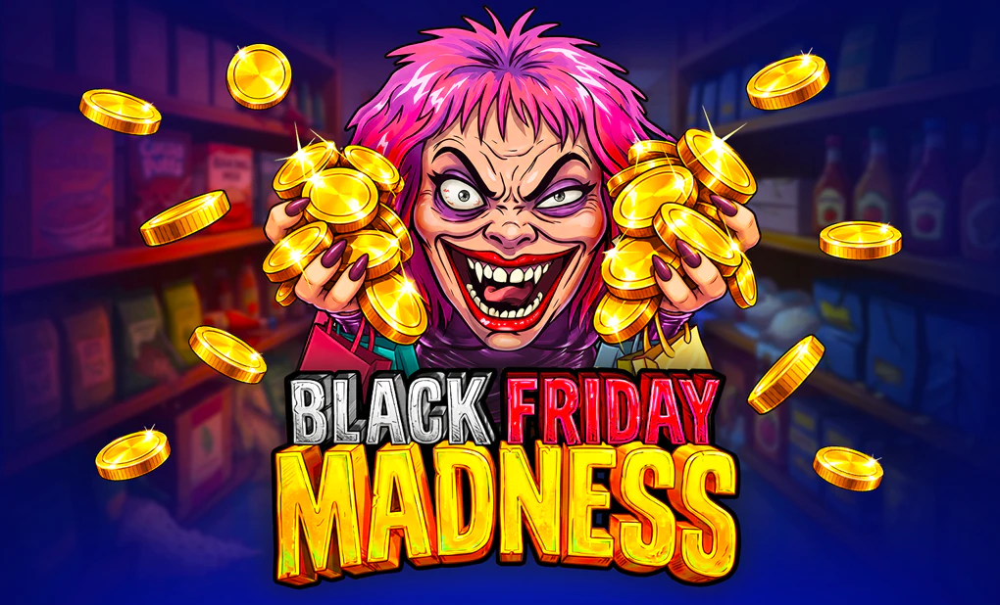

Black Friday Madness - RTP, análise e onde jogar

| Provedor | BGaming |
|---|---|
| Tipo de jogo | Caça-níquel de vídeo |
| Tema | Caos das compras da Black Friday |
| Grade | 5x4 |
| Linhas | 60 |
| RTP | 97,00% |
| Volatilidade | Média |
| Prêmio máximo | 5.000x a aposta (a BGaming lista um prêmio máximo de 250.000 euros) |
| Lançamento | 18 de novembro de 2026 |
| Celular | Sim |
Visão geral
Black Friday Madness da BGaming tem lançamento previsto para 18 de novembro de 2026, e toma o maior dia de compras do ano como cenário completo. Todos os dados desta página vêm da página oficial do jogo da BGaming em bgaming.com. O estúdio o apresenta como outro lançamento polêmico na linha do seu caça-níquel Ultras: uma exploração do caos dentro de uma sociedade consumista, um caos que se agrava em torno da Black Friday, e um jogo que a própria BGaming oferece também como opção de horror social para o Halloween.
A prateleira é uma grade de 5x4 com produtos em oferta e um elenco de personagens muito coloridos, cada um com sua própria agenda. A BGaming pergunta se esses compradores fervorosos vão lutar pelo próprio benefício ou se unir para garantir que cada butim seja levado, e os rolos ficam bem no meio dessa discussão: competição feroz na superfície, butim compartilhado por baixo.
O bônus a acompanhar é o Hold and Win cheio de moedas. Com 6 ou mais moedas douradas brilhantes, o jogo de bônus abre, com marcos em 10, 15 e 20 moedas e quatro prêmios na escada: Mini de 10x, Minor de 25x, Major de 100x e Grand de 500x. Nos rolos principais, os carrinhos curinga expansíveis trazem a outra mecânica central. Os números em torno dele são generosos para um jogo de volatilidade média: 60 linhas, um RTP de 97,00% e um prêmio máximo de 5.000x a aposta.
Uma nota honesta: a página do jogo da BGaming marca por enquanto a demonstração e o trailer como em breve, então ainda não há prévia jogável para conferir. Quando o estúdio os publicar, esta página será atualizada a partir dessa fonte.
Onde jogar Black Friday Madness
Black Friday Madness tem lançamento previsto em cassinos online que oferecem jogos da BGaming. Comece pelas nossas listas verificadas:
Nigéria | México | Quênia | África do Sul | Colômbia | Brasil
Perguntas frequentes sobre Black Friday Madness
Quando Black Friday Madness será lançado?
A BGaming tem o lançamento de Black Friday Madness previsto para 18 de novembro de 2026.
Como funciona o bônus Hold and Win em Black Friday Madness?
Com 6 ou mais moedas douradas, o jogo de bônus Hold and Win abre. Ele tem marcos em 10, 15 e 20 moedas e quatro prêmios: Mini de 10x, Minor de 25x, Major de 100x e Grand de 500x.
Quais são o RTP, a volatilidade e o prêmio máximo de Black Friday Madness?
A BGaming informa um RTP de 97,00%, volatilidade média e um prêmio máximo de 5.000x a aposta, com um valor de prêmio máximo de 250.000 euros em sua página do jogo.
Já existe demonstração ou trailer de Black Friday Madness?
Ainda não. A página do jogo da BGaming marca a demonstração e o trailer como em breve, então esta página será atualizada quando o estúdio os publicar.